정보처리산업기사 (2001-09-23 기출문제)
1과목: 데이터 베이스
1. 해싱 함수의 값을 구한 결과 키 K1, K2가 같은 값을 가질 때, 이들 키 K1, K2의 집합을 무엇이라 하는가?
- Mapping
- Folding
- Synonym
- Chaining
(정답률: 76%)

2. 관계 데이터 모형에서 하나의 릴레이션을 구성하는 각각의 행을 지칭하는 것은?
- DOMAIN
- TUPLE
- ENTITY
- MEMBER
(정답률: 80%)
3. 데크(deque)에 관한 설명으로 옳지 않은 것은?
- 삽입과 삭제가 양쪽 끝에서 일어난다.
- 스택과 큐를 복합한 형태이다.
- 사용하는 포인터는 한 개이다.
- 입력제한 데크를 scroll이라고 한다.
(정답률: 72%)
4. 다음은 어떠한 정렬 방법을 설명한 것인가?
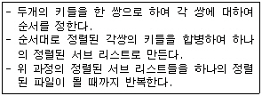
- 2-way 합병 정렬
- 퀵 정렬
- 기수정렬
- 버블정렬
(정답률: 71%)
5. E-R 다이어그램에서 아래 기호는 어떤 요소를 나타내는가?
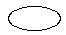
- 개체
- 관계
- 항목
- 속성
(정답률: 80%)
6. 키가 아닌 모든 속성이 기본 키(primary key)에 충분한 함수적 종속을 만족하는 정규형은?
- 1N
- 2NF
- 3NF
- 4NF
(정답률: 41%)
7. 데이터베이스관리자(DBA)의 역할에 대한 설명으로 거리가 먼 것은?
- 데이터베이스의 스키마를 정의한다.
- 데이터베이스의 저장장소 및 접근 방법을 정의한다.
- 사용자들에게 데이터베이스의 접근 권한을 부여한다.
- 응용 프로그램을 통하여 데이터베이스를 접근한다.
(정답률: 67%)
8. 선형 자료구조에 해당되지 않는 것은?
- 스택(stack)
- 큐(queue)
- 트리(tree)
- 데크(deque)
(정답률: 92%)
9. 두 릴레이션에 저장된 튜플간에 데이터 일관성을 유지하기 위한 것으로서, 릴레이션 R1에 저장된 튜플이 릴레이션 R2에 있는 튜플을 참조하려면 참조되는 튜플이 반드시 R2에 존재해야 한다는 조건은?
- 참조 무결성
- 개체 무결성
- 주소 무결성
- 원자값 무결성
(정답률: 77%)
10. 다음 데이터베이스 설계 순서를 바르게 나열한 것은?
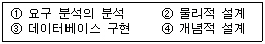
- ①-②-③-④
- ①-③-②-④
- ①-④-②-③
- ①-②-④-③
(정답률: 86%)
11. 다음 SQL 문에서 DISTINCT의 의미는?
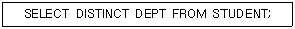
- 검색결과에서 레코드 중복을 제거하라.
- 모든 레코드를 검색하라
- 검색 결과를 순서대로 정렬하라
- DEPT의 처음 레코드만 검색하라.
(정답률: 71%)
12. 다음 ( )안의 내용에 해당하는 관련 단어는?
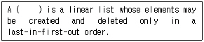
- Stack
- Queue
- List
- Tree
(정답률: 84%)
13. Which of the following is not desirable properties of transaction?
- atomicity
- consistency preservation
- isolation
- validity
(정답률: 38%)
14. 시스템 자신이 필요로 하는 여러 가지 객체에 관한 정보를 포함하고 있는 시스템 데이터베이스로서, 포함하고 있는 객체로는 테이블, 데이터베이스, 뷰, 접근 권한 등이 있는 것은?
- 인덱스(Index)
- 카탈로그(Catalog)
- QBE(Query By Example)
- SQL(Structure Query Language)
(정답률: 53%)
15. 주기억장치내에서 이루어지는 정렬은?
- radix sort
- cascade sort
- balanced sort
- oscillating sort
(정답률: 27%)
16. 개체간의 관계와 제약조건을 나타내고 데이터베이스의 접근 권한, 보안 및 무결성 규칙 명세가 있는 스키마는?
- 내부 스키마
- 외부 스키마
- 개념 스키마
- 서브 스키마
(정답률: 62%)
17. 아래 이진 트리를 후위순서(postorder)로 운행한 결과는?
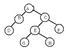
- ABCDEFGH
- DBGHEFCA
- ABDCEGHF
- BDGHEFAC
(정답률: 77%)
18. 데이터베이스 관리 시스템(DBMS)의 필수기능중 제어기능에 대한 설명으로 거리가 먼 것은?
- 데이터베이스를 접근하는 갱신, 삽입, 삭제 작업이 정확하게 수행되어 데이터의 무결성이 유지되도록 제어해야 한다.
- 데이터의 논리적 구조와 물리적 구조 사이에 변환이 가능하도록, 두 구조 사이의 사상(Mapping)을 명시하여야 한다.
- 정당한 사용자가 허가된 데이터만 접근할 수 있도록 보안(Security)을 유지하고 권한(Authorit)을 검사할 수 있어야 한다.
- 여러 사용자가 데이터베이스를 동시에 접근하여 데이터를 처리할 때 처리 결과가 항상 정확성을 유지하도록 병행 제어(Concurrency Control)를 할 수 있어야 한다.
(정답률: 62%)
19. 삽입 SQL(embedded SQL)에 대한 설명으로 옳지 않은 것은?
- 응용 프로그램에 삽입되어 사용되는 SQL이다.
- SQL 문장의 식별자로서 EXEC SQL을 앞에 기술한다.
- 호스트 변수와 데이터베이스 필드의 이름은 같아도 무방하다.
- 호스트 언어의 변수는 SQL 변수와 구별하기 위하여 앞에 % 기호를 붙인다.
(정답률: 54%)
20. 뷰(view)에 대한 설명으로 옳지 않은 것은?
- 데이터베이스 일부만 선택적으로 보여주므로 데이터베이스의 접근을 제한할 수 있다.
- 복잡한 검색을 사용자는 간단하게 할 수 있다.
- 사용자에게 데이터의 독립성을 제공할 수 있다.
- 뷰는 별도의 디스크 공간을 차지하여 생성되는 실제적 테이블이다.
(정답률: 83%)
2과목: 전자 계산기 구조
21. 메모리 용량이 총 4096워드이고, 1워드가 8비트라 할때 PC(Program Counter)와 MBR(Memory Buffer Register)의 비트수를 올바르게 나타낸 것은?
- PC=8비트, MBR=12비트
- PC=12비트, MBR=8비트
- PC=8비트, MBR=8비트
- PC=12비트, MBR=12비트
(정답률: 67%)
22. 제어데이터의 종류를 열거한 것으로 옳지 않은 것은?
- 메이저 스테이트 사이의 변천을 제어하는 제어 데이터
- 입출력 장치의 제어점을 제어하는데 필요한 제어데이터
- 중앙 처리 장치의 제어점을 제어하는데 필요한 제어데이터
- 인스트럭션 수행순서를 결정하는데 필요한 제어데이터
(정답률: 26%)
23. 전류 일치 기술(coincident-current technique)에 의하여 기억장소를 선별하는 기억장치는?
- 자기 코어
- 자기 디스크
- 자기 테이프
- 자기 드럼
(정답률: 39%)
24. 주기억 장치에 기억된 명령을 꺼내서 해독하고, 시스템 전체에 지시신호를 내는 것은?
- 채널(channel)
- 제어기구(control unit)
- 연산 논리 기구(ALU)
- 입출력 장치(I/O unit)
(정답률: 49%)
25. 사용되는 문자의 빈도수에 따라서 코드의 길이가 달라지는 코드는?
- 그레이(gray)
- 742‘1’
- 허프만(huffman)
- 비퀴너리(biquinary)
(정답률: 47%)
26. 정보의 단위로 가장 적은 것은?
- Byte
- Word
- Bit
- Record
(정답률: 76%)
27. 마이크로 프로그램(micro program)에 대한 설명 중 옳지 않은 것은?
- 마이크로 프로그램은 보통 RAM에 저장한다.
- 마이크로 프로그램은 CPU 내의 제어장치를 설계하는 프로그램이다.
- 마이크로 프로그램은 각종 제어신호를 발생시킨다.
- 마이크로 프로그램은 마이크로 명령으로 형성되어 있다.
(정답률: 49%)
28. 연산장치의 기본 요소가 되는 것은?
- 자기테이프
- 레지스터
- 카드
- 자기코어
(정답률: 74%)
29. 연산자의 기능에 해당하지 않는 것은?
- 함수연산 기능
- 기억 기능
- 제어 기능
- 입·출력 기능
(정답률: 46%)
30. 페치사이클(fetch cycle)에 해당하지 않는 것은?
- 주기억장치의 지정 장소(address)로부터 명령을 끄집어 내어 CPU에 옮긴다.
- 명령의 오퍼레이션(operation)부를 명령 레지스터(Instruction Register)에 세트(set)시켜 해독시킨다.
- 다음에 실행할 명령의 기억장소(address)를 세트(set)시킨다.
- 실제로 명령을 이행한다.
(정답률: 53%)
31. 2진수 (1001011)2의 2의 보수(2’s Complement)는?
- 0110100
- 1110100
- 1110101
- 0110101
(정답률: 58%)
32. 비수치적 자료의 사용 분야에 해당되지 않는 것은?
- 문장의 해석 및 분류
- 문헌정보 검색
- 과학적인 응용 및 상업적인 응용
- 고급 프로그래밍 언어를 기계어로 번역하는 처리
(정답률: 35%)
33. program count의 기능을 설명한 것 중 옳은 것은?
- PC의 내용은 fetch cycle 동안에 1 증가된다.
- PC의 내용은 execute cycle 동안에 1 증가된다.
- PC의 내용은 fetching, executing과 관계없다.
- PC의 내용은 변화하지 않는다.
(정답률: 45%)
34. 인터럽트 요인이 발생하였을 때 CPU가 확인하여야 할 사항은?
- 메모리 내용
- 입·출력 장치
- 시간
- 모든 레지스터의 내용
(정답률: 32%)
35. Computer system에 예기치 않은 일이 발생했을 때 제어 프로그램에게 알려주는 것을 무엇이라 하는가?
- Interrupt
- PSW(Program Status Word)
- Problem State(처리프로그램 상태)
- Program Library
(정답률: 79%)
36. 패리티 bit는 몇 개의 착오까지 검출이 가능한가?
- 2 bit의 숫자만큼
- 1 bit
- 2 bit
- 4 bit
(정답률: 52%)
37. 마이크로 동작(Micro-operation)에 대한 정의로서 옳은 것은?
- 레지스터에 저장된 데이터에 의해서 이루어지는 동작
- 컴퓨터의 빠른 계산 동작
- 플립플롭 내에서 기억되는 동작
- 2진수 계산에 쓰이는 동작
(정답률: 57%)
38. 컴퓨터의 연산장치에서 2개의 자료 11011101, 01101101을 Exclusive-OR 연산하였을 때의 결과는?
- 01001111
- 10110000
- 11111101
- 01001101
(정답률: 54%)
39. 오퍼랜드(operand) 부분에 데이터를 기억하는 방법에 해당되는 것은?
- 상대 번지 지정
- 이미디어트(immediate) 번지 지정
- 변형 페이지 제로 번지 지정
- 인덱스 번지 지정
(정답률: 21%)
40. DRAM의 특징으로 옳은 것은?
- 전원이 끊어져도 기억장치의 상태는 지워지지 않는다.
- 주기적으로 메모리 재생(refresh)을 해야 한다.
- 내용 주소화(content addressable) 기억장치이다.
- 동적 재배치(dynamic relocation)를 용이하게 한다.
(정답률: 51%)
3과목: 시스템분석설계
41. 파일 설계 순서로 옳은 것은?
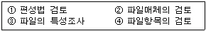
- ①②③④
- ②③①④
- ①③②④
- ④③②①
(정답률: 53%)
42. 파일의 색인 순차편성은 데이터 부분과 색인 부분으로 구성되는데, 다음 중 색인부분에 포함되지 않는 것은?
- 오버플로우 영역 인덱스
- 마스터 인덱스
- 실린더 인덱스
- 트랙 인덱스
(정답률: 68%)
43. 문서화의 목적에 대한 설명으로 옳지 않은 것은?
- 시스템 개방 프로젝트 관리의 효율화
- 소프트웨어 이관의 용이함
- 시스템 유지보수의 효율화
- 시스템 개발과정의 요식행위화
(정답률: 64%)
44. 성공적인 시스템을 개발하기 위해서는 아래 보기 중 어떤 순서로 접근하는 것이 효율적이겠는가?
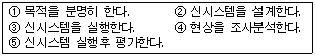
- ①④②③⑤
- ①②③④⑤
- ⑤④②③①
- ④①②③⑤
(정답률: 66%)
45. 발생한 데이터를 전표상에 기록하고, 일정한 시간단위로 일괄 수집하여 전산부서에서 입력매체에 수록하는 입력 방식은?
- 분산매체화 시스템
- 턴어라운드 시스템
- 집중매체화 시스템
- 직접입력 시스템
(정답률: 64%)
46. 아래 보기와 같이 주로 도서 분류코드에 사용되는 코드는?
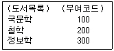
- 10진코드
- 순서코드
- 문자코드
- 분류코드
(정답률: 52%)
47. 프로세스 입력단계에서의 체크 중 입력정보의 특정항목 합계 값을 미리 계산해서 이것을 입력정보와 함께 입력하고 컴퓨터상에서 계산한 결과와 수동 계산결과가 같은지를 체크하는 것은?
- 순차 체크(sequence check)
- 범위 체크(limit check)
- 균형 체크(balance check)
- 일괄 합계 체크(batch total check)
(정답률: 59%)
48. 프로그램 단위별로 디버깅이 끝난 것을 모아 서로 연관된 프로그램군(group)을 계통적으로 검사하는 테스트 방법을 무엇이라 하는가?
- 단위 테스트
- 결합 테스트
- 종합 테스트
- 계층 테스트
(정답률: 29%)
49. 부여된 코드를 실제로 사용하는 단계에서 ‘781356’을 ‘783156’으로 오류(Error)가 발생되었을 때, 어떤 오류에 해당하는가?
- Transcription Error
- Transposition Error
- Double Transposition Error
- Random Error
(정답률: 76%)
50. 객체 지향 시스템에서는 객체가 시스템을 구성하는 기본 단위인데, 이런 객체 중에는 같은 특성을 갖는 객체들이 많다. 이와 같이 같은 특성을 갖는 객체를 표현한 것을 무엇이라 하는가?
- 속성
- 클래스
- 메시지
- 인스턴스
(정답률: 68%)
51. 마스터 파일(Master File)의 변경하고자 하는 내용을 검사하거나 갱신할 때 사용되는 정보로서, 일시적인 성격을 지닌 파일은?
- Transaction File
- History File
- Summary File
- Trailer File
(정답률: 75%)
52. 시스템의 신뢰성 평가요소로 거리가 먼 것은?
- 시스템 전체의 가동률
- 보조기억장치의 용량과 성능
- 신뢰성 향상을 위해 시행한 처리의 경제 효과
- 시스템을 구성하는 각 요소의 신뢰도 균형성
(정답률: 48%)
53. 자료 사전에서 사용되는 표기법 중 반복의 의미를 나타내는 기호는?
- +
- =
- [ ]
- { }
(정답률: 67%)
54. 소프트웨어 개발주기 모델의 하나인 폭포수형(waterfall) 모델에서 개발될 소프트웨어에 대한 전체적인 하드웨어 및 소프트웨어 구조, 제어구조, 자료구조의 개략적인 설계를 작성하는 단계는?
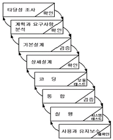
- 타당성조사 단계
- 기본설계 단계
- 상세설계 단계
- 계획과 요구사항 분석단계
(정답률: 68%)
55. 출력설계의 순서가 옳은 것은?
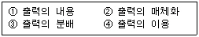
- ①-②-③-④
- ①-④-②-③
- ④-①-②-③
- ④-③-②-①
(정답률: 64%)
56. 코드의 3대 기능으로 거리가 먼 것은?
- 정렬
- 식별
- 분류
- 배열
(정답률: 41%)
57. 입력설계시에 제일 먼저 설계하는 항목은?
- 입력 내용에 관한 설계
- 입력 매체에 관한 설계
- 입력 투입에 관한 설계
- 입력 정보수집 설계
(정답률: 66%)
58. HIPO는 일반적으로 세가지로 구성된 패키지 형태로 되어 있는데, 이에 해당하지 않는 것은?
- 도식목차(visual table of contents)
- 순서도(flowchart)
- 총괄도표(overview diagram)
- 상세도표(detail diagram)
(정답률: 47%)
59. 시스템 구성의 기본 요소에 해당되지 않는 것은?
- Processing
- Control
- Feedback
- Memory
(정답률: 48%)
60. 프로세스 설계시 유의할 사항으로 거리가 먼 것은?
- 오류에 대비한 체크 시스템을 고려한다.
- 신뢰성과 정확성을 고려한다.
- 시스템의 상태, 구성요소 및 기능 등을 종합적으로 표시한다.
- 각 부문별 담당자의 책임범위를 고려한다.
(정답률: 78%)
4과목: 운영체제
61. 어떤 프로세스가 프로그램 수행에 소요되는 시간보다 페이지 교체에 소요되는 시간이 더 많은 경우를 의미하는 것은?
- page fault
- thrashing
- overloading
- demand paging
(정답률: 60%)
62. 교착상태(deadlock) 발생의 필요조건이 아닌 것은?
- Mutual exclusion
- Hold and wait
- Preemption
- Circular wait
(정답률: 69%)
63. 분산 시스템의 장점이 아닌 것은?
- 보안이 향상된다.
- 자원 공유가 가능하다.
- 신뢰성이 보장된다.
- 연산 처리 속도가 향상된다.
(정답률: 75%)
64. RR(Round-Robin) 스케쥴링 기법에서 시간 할당량에 대한 설명으로 옳지 않은 것은?
- 시간 할당량이 너무 작으면 문맥교환 오버헤드가 작아지게 된다.
- 시간 할당량이 너무 작으면 문맥교환이 자주 일어나게 된다.
- 시간 할당량이 너무 크면 FIFO 기법과 거의 같은 형태가 된다.
- 시간 할당량이 너무 작으면 시스템은 대부분의 시간을 프로세서의 스위칭에 소비하고 실제 사용자들의 연산은 거의 못하는 결과가 초래된다.
(정답률: 63%)
65. 프로그램의 실행 오류로 인해 발생하는 인터럽트로 수행중인 프로그램에서 0으로 나누는 연산이나, 스택의 오버플로우(overflow) 등과 같은 오류가 발생했을 때, 일어나는 인터럽트는 무엇인가?
- 기계 검사 인터럽트
- SVC(Supervisor Call) 인터럽트
- 프로그램 검사(program check) 인터럽트
- 재시작(restart) 인터럽트
(정답률: 57%)
66. 13K의 작업을 두 번째 공백인 14K의 작업공간에 할당했을 경우, 사용된 기억장치 배치전략 기법은?
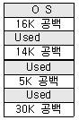
- 최초 적합(first-fit)
- 최적 적합(best-fit)
- 최악 적합(worst-fit)
- 최후 적합(last-fit)
(정답률: 80%)
67. 데이터 암호화 시스템 중, 암호화 키와 해독 키가 따로 존재하여 암호화 키는 공용키로 공개되어 있고 해독 키는 개인 키로 비밀이 보장되어 있는 방식은?
- 비밀 번호(password)
- DES(Data Encryption Standards)
- 공개 키 시스템(public key system)
- 디지털 서명(digital signature)
(정답률: 62%)
68. 프로세스 제어블록(PCB)에 포함되지 않는 것은?
- 프로세스의 현재 상태
- 우선 순위
- 프로세스 식별자
- 프로세스의 CPU 사용율
(정답률: 54%)
69. 유닉스의 파일 시스템에서 inode에 포함되는 내용이 아닌 것은?
- 파일을 최후로 접근(access)한 시간
- 파일이 최초로 변경(modification)된 시간
- 파일의 크기
- 파일의 타입
(정답률: 56%)
70. 파일 디스크립터(file descriptor)에 포함되는 내용이 아닌 것은?
- 파일 작성자
- 생성 날짜 및 시간
- 보조기억장치 상의 파일의 위치
- 액세스 회수
(정답률: 24%)
71. “윈도 98”에서 사용자가 사용하기 원하는 하드웨어를 시스템에 부착하면 자동으로 인식하여 동작하게 해 주는 기능은?
- folding
- plug and play
- coalescing
- naming
(정답률: 64%)
72. 비선점(nonpreemptive)형 프로세스 스케줄링 방식에 해당하는 것은?
- SJF, SRT
- SJF, FIFO
- Round-Robin, SRT
- Round-Robin, SJF
(정답률: 53%)
73. 특정 공유 자원이나 한 그룹의 공유 자원들을 할당하는 데 필요한 데이터 및 프로시저를 포함하는 병행성 구조로서 자료 추상화 개념을 기초로 하는 것은?
- Monitor
- Locality
- Paging
- Context Switching
(정답률: 43%)
74. 운영체제의 목적으로 거리가 먼 것은?
- 시스템 성능 향상
- 처리량 향상
- 응답시간 증가
- 신뢰성 향상
(정답률: 82%)
75. 분산처리 시스템의 위상(topology)에 따른 분류에서 성형(star) 구조에 대한 설명으로 옳지 않은 것은?
- 터미널의 증가에 따라 통신 회선수도 증가한다.
- 중앙 노드 이외의 장애는 다른 노드에 영향을 주지 않는다.
- 각 노드들은 point-to-point 형태로 모든 노드들과 직접 연결된다.
- 제어가 집중되고 모든 동작이 중앙 컴퓨터에 의해 감시된다.
(정답률: 59%)
76. 인터럽트 발생시 운영체제가 가장 먼저 하는 일은?
- 인터럽트 처리
- 인터럽트 발생 지점으로 복귀
- 인터럽트 서비스 루틴으로 제어를 이동
- 현재까지의 모든 프로그램 상태를 저장
(정답률: 62%)
77. 기억 장치에서 페이지들이 참조될 때마다 그때의 시간을 기억시켜 두고 페이지 대치가 필요할 때, 가장 오랫동안 사용되지 않은 페이지를 선택하여 대치시키는 방법은 무엇인가?
- FIFO(first-in-first-ont)
- LRU(least recently used)
- LFU(least frequently used)
- Second Chance
(정답률: 61%)
78. Brinch Hansen의 HRN 기법에서 가변적 우선순위를 구하는 식은?
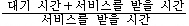
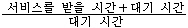
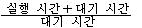
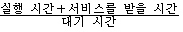
(정답률: 67%)
79. 운영체제에 대한 설명으로 옳은 것은?
- 운영체제는 컴퓨터 자원들인 기억장치, 프로세서, 파일 및 정보, 네트워크 및 보호 등을 효율적으로 관리할 수 있는 프로그램의 집합니다.
- 운영체제는 컴퓨터 하드웨어, 시스템 프로그램, 응용 프로그램, 사용자 등으로 구성되어 있다.
- 자원할당 측면에서 운영체제의 주된 기능은 파일 관리, 입출력의 구현, 소스 프로그램의 컴파일 및 목적코드 생성 등이다.
- 운영체제는 시스템 전체의 움직임을 감시, 감독 관리 및 지원하는 처리 프로그램과 주어진 문제를 응용 프로그램 감독 하에 실제 데이터 처리를 하는 제어 프로그램으로 구성된다.
(정답률: 49%)
80. 하나의 프로세스가 자주 참조하는 페이지의 집합을 의미하며, 이런 페이지 집합이 적재되면 프로세스는 한동안 페이지 폴트 없이 실행될 수 있다. 이런 페이지 집합을 무엇이라 하는가?
- working set
- critical section
- paging
- fragmentation
(정답률: 72%)
5과목: 정보통신개론
81. 변조속도는 어떻게 구하는가?
- 데이터 신호속도/변조시 상태변화 수
- 변조시 상태변화 수/데이터 신호속도
- 데이터 전송속도/변조시 상태변화 수
- 변조시 상태변화 수/데이터 전송속도
(정답률: 26%)
82. 꼬임선(Twisted-pair line)의 특징으로 맞지 않는 것은?
- 전기적 간섭현상을 줄이기 위해서 균일하게 서로 감겨있는 형태의 케이블이다.
- 하나의 케이블에 여러쌍의 꼬임선들을 절연체로 피복하여 구성한다.
- 다른 전송매체에 비해서 거리, 대역폭 및 데이터 전송률면에서 제한적이지 않다.
- 가격이 저렴하고 설치가 간편한 이점을 가진다.
(정답률: 62%)
83. 다음 중 광섬유케이블의 장점이 아닌 것은 ?
- 안정된 통신 및 누화 방지
- 많은 중계 급전선 필요
- 광대역이며 대용량 전송
- 실치보수 용이 및 비용 절감
(정답률: 38%)
84. 다음 중 데이터 통신에서의 변복조 방식이 아닌 것은 ?
- 진폭편이 변조(ASK)
- 위상 편이 변조(PSK)
- 주파수편이 변조(FSK)
- 주파수 디지털 변조(PDK)
(정답률: 72%)
85. 네트워크 구조에 대한 설명 중 틀린 것은 ?
- 프로세스는 정보처리나 통신을 하는 것을 모델화한 것이다.
- 원격처리장치는 노드로 모델화 시킬 수 있다.
- 전기신호를 운반하는 매체는 링크로 모델화 한다.
- 정보처리란 노드내의 프로그램이 다른 프로그램과 상호 보완적으로 실행하는 처리라 할 수 있다.
(정답률: 21%)
86. 패키지계 뉴미디어에 속하지 않는 것은 ?
- CATV
- VTR
- 비디오 디스크
- CD-ROM
(정답률: 27%)
87. OSI 7계층 참조 모델의 목적에 해당되지 않는 것은 ?
- 시스템 상호간을 접속하기 위한 개념을 규정한다.
- OSI 규격을 개발하기 위한 범위를 정한다.
- 관련 규격의 적합성을 조정하기 위한 공동적인 기반을 제공한다.
- 개별적인 독립된 시스템의 특수성을 유지하도록 한다.
(정답률: 67%)
88. 패킷 교환망의 특징으로 옳지 않은 것은 ?
- 전송 오류의 정정 불능
- 전송량제어와 전송속도 변환
- 대량의 데이터 전송시 전송 지연
- 표준화된 프로토콜 적용
(정답률: 57%)
89. LAN의 채널 액세스 제어방식인 CSMA/CD에 대한 설명 내용으로 잘못된 것은 ?
- 채널로 송출된 패킷은 모든 제어기에서 수신가능하다.
- 각 제어기는 액세스 제어에 관하여 반송파 검출 및 충돌 검출만 필요하다.
- 제어기가 상위계층으로부터 패킷을 받고나서 전송을 완료할 때까지의 시간은 확률적으로 변화한다.
- 모든 제어기는 차동의 액세스 권리를 갖는다.
(정답률: 18%)
90. 다음 중 정보통신 관련 국제표준기구가 아닌 것은 ?
- ITU
- ISO
- IEC
- IITA
(정답률: 65%)
91. 데이터통신방식의 에러체크방식 중 수평패리티방식에서 짝수패리티 방식을 채택할 경우 1개의 블록 중에 수평에 대한 1의 개수는 ?
- 홀수가 되도록 한다.
- 3의 배수가 되도록 한다.
- 짝수가 되도록 한다.
- 5개가 되도록 한다.
(정답률: 63%)
92. 그림과 같은 네트워크 형상(Topology)에 해당되는 것은
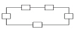
- 성(Star)형
- 버스(Bus)형
- 로터리(Rotary)형
- 링(Ring)형
(정답률: 77%)
93. 데이터 통신에서 컴퓨터가 단말기에 전송할 데이터의 유무를 묻는 것은 ?
- Polling
- Calling
- Selection
- Link up
(정답률: 53%)
94. 다음중 반송파의 진폭과 위상을 상호 변환하여 신호를 얻는 디지털 변조방식은 ?
- PSK
- ASK
- QAM
- FSK
(정답률: 58%)
95. 데이터 전송기기에서 통신제어장치의 주요한 기능이 아닌 것은 ?
- 통신방식 제어
- 다중접속 제어
- 단말제어
- 전송제어
(정답률: 51%)
96. 다음 그림은 OSI 7 계층 모델의 개념도이다. (가)부분에 해당하는 것은 ?
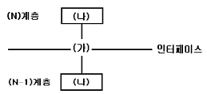
- Entity
- Service Primitive
- Process
- SAP(Service Access Point)
(정답률: 29%)
97. 7 정보통신망의 3대 동작 기능이 아닌 것은 ?
- 전달기능
- 신호기능
- 부호기능
- 제어기능
(정답률: 73%)
98. 다음과 같은 장점을 가지고 있는 전송매체는 ?
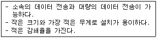
- 동축케이블(Coaxial cable)
- 꼬임 UTP 케이블(Twisted UTP cable)
- 스크린케이블(Screen cable)
- 광섬유케이블(Optical fiber cable)
(정답률: 66%)
99. TCP/IP 상에서 운용되는 응용 서비스가 아닌 것은 ?
- FTP(File Transfer Protocol)
- Telnet
- DSU(Digital Service Unit)
(정답률: 49%)
100. 00 다음 중 무선계 뉴미디어에 속하는 것은 ?
- LAN
- ISDN
- VAN
- Teletext
(정답률: 57%)